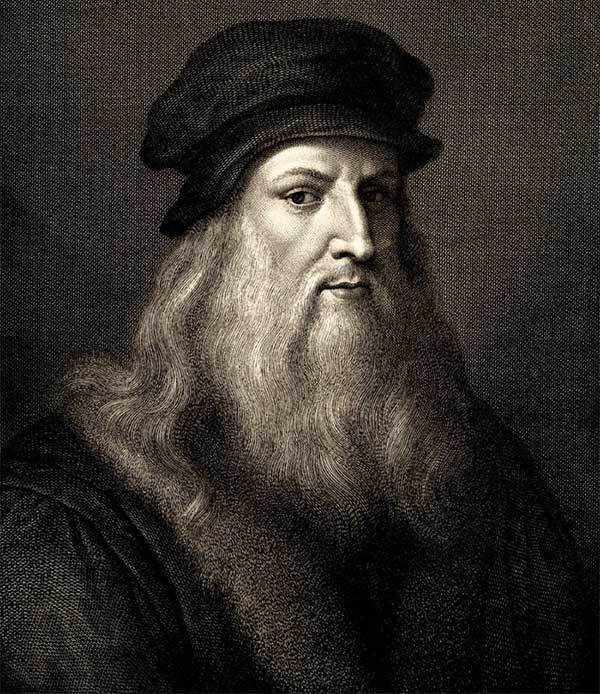
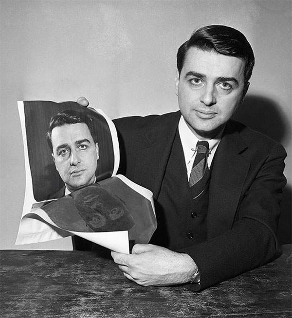
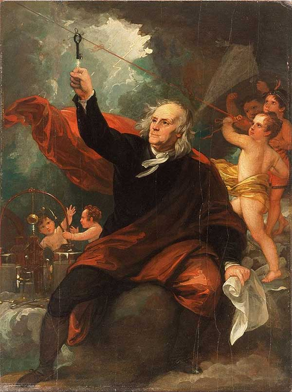
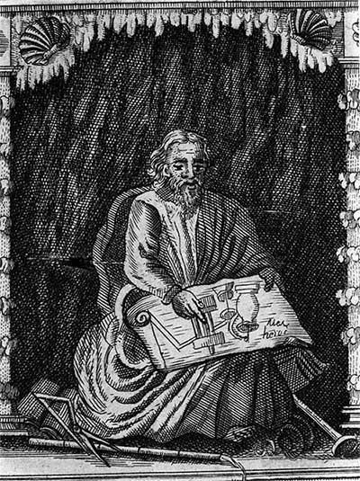
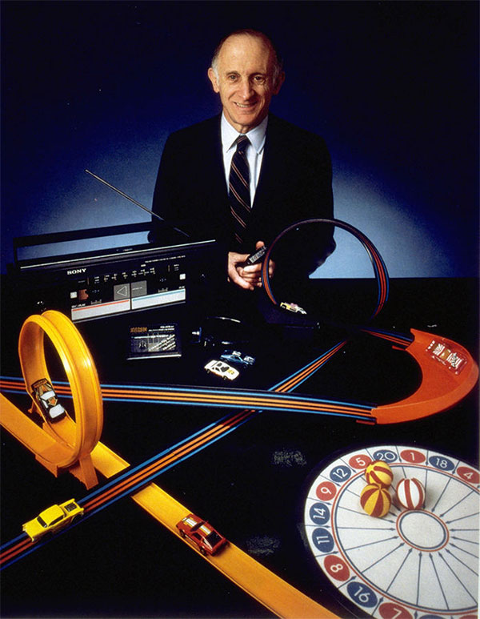
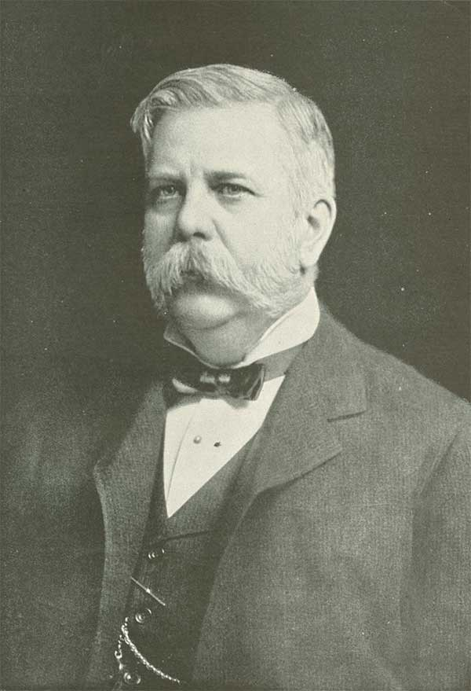
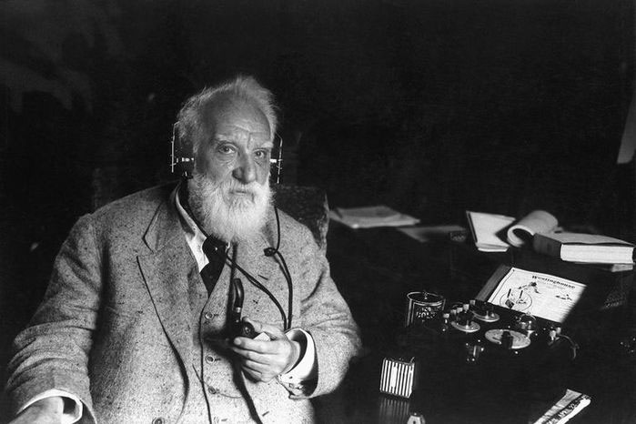
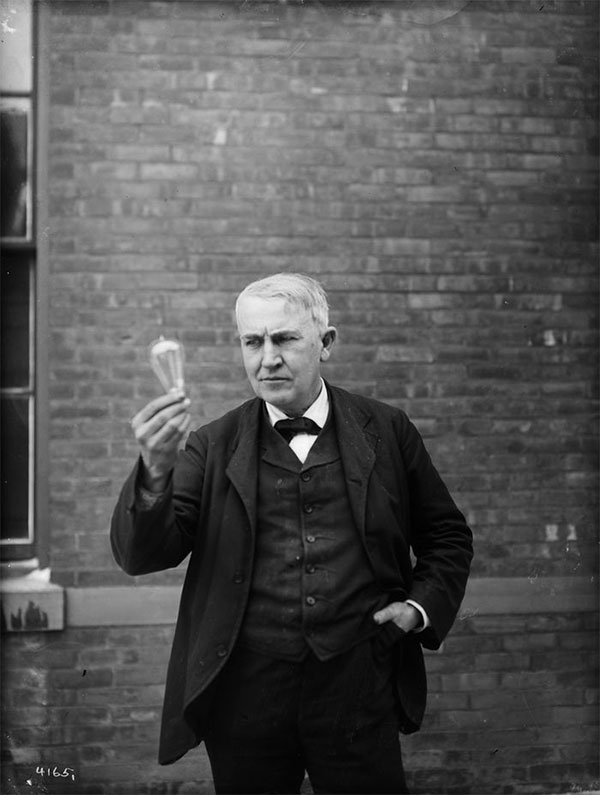
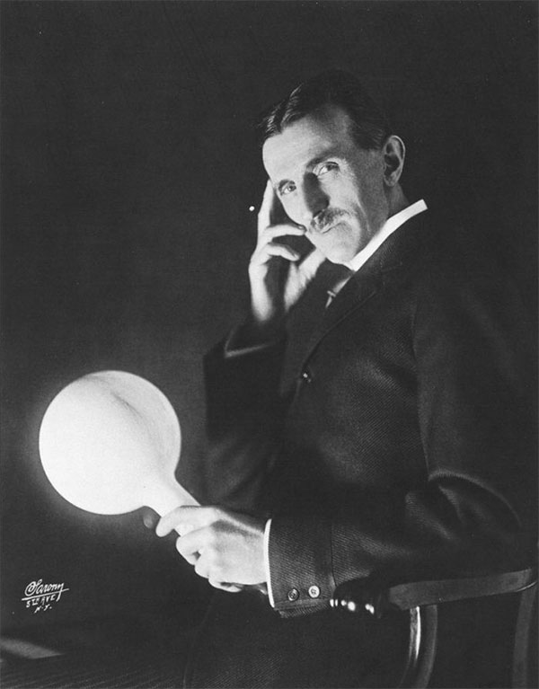
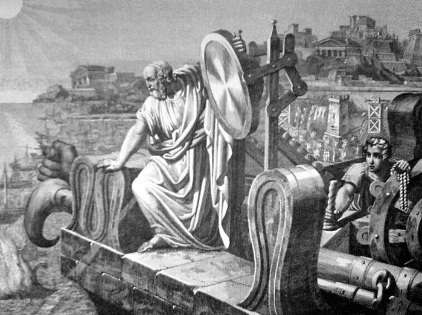

Top 10 thiên tài có phát minh vĩ đại nhất trong lịch sử
Những người có phát minh quan trọng nhất thế giới
1. Leonardo Da Vinci
Có thể nói đây là một trong những bộ óc vĩ đại nhất lịch sử nhân loại, có rất nhiều ý tưởng tương lai, vượt xa khả năng công nghệ và tầm hiểu biết của con người thời đó, chẳng hạn máy bay trực thăng, tàu ngầm, xe tăng, dù nhảy, máy tính…
Dù vậy rất nhiều ý tưởng của Da Vinci chỉ dừng lại ở những bản ký họa và những dòng miêu tả được ghi lại tỉ mỉ trên giấy chứ không được đưa vào thành phát minh thực tiễn, vì công nghệ thời đó không cho phép.
2. Edwin Land
Dù Edwin Land không phát minh ra máy ảnh hay nghệ thuật nhiếp ảnh, nhưng ông đã hoàn thiện mọi kỹ thuật xoay quanh nhiếp ảnh nhờ những phát minh thiên tài của mình.
Lúc còn là sinh viên năm nhất tại Đại học Harvard, Land đã tạo ra một loại kính lọc phân cực dùng trong nhiếp ảnh, giúp thu được màu xanh đậm hơn khi chụp bầu trời, đồng thời loại bỏ ánh sáng phản chiếu từ mặt nước hay thủy tinh. Sau đó, cùng với các nhà khoa học khác, ông đã đem ứng dụng về loại kính lọc phân cực này áp dụng trong nhiều lĩnh vực khoa học và nghệ thuật khác nhau, đồng thời chế tạo ra chiếc máy ảnh chụp lấy liền nổi tiếng khắp thế giới.
3. Benjamin Franklin
Không chỉ là một chính trị gia lỗi lạc, Benjamin Franklin còn rất đa tài và rất giỏi trong nhiều lĩnh vực khác nhau, đặc biệt là khoa học và kỹ thuật. Ông chính là người đã phát minh ra rất nhiều món đồ nổi tiếng, chẳng hạn cột thu lôi, ống thông tiểu, chân nhái, kính hai tròng, đàn harmonica bằng thủy tinh…
Tuy nhiên, Franklin không bao giờ đăng ký nhận bằng sáng chế cho những phát minh của mình, ông cho rằng những phát minh của ông nên được chia sẻ rộng rãi cho tất cả mọi người cùng sử dụng, giống như việc bản thân ông đã hưởng rất nhiều lợi ích từ các phát minh của những người đi trước.
4. Hero xứ Alexandria
Hero là người đầu tiên phát minh ra chiếc máy bán hàng tự động (dù mục đích của nó vào thời đó chỉ là để bán nước thánh), cây đàn organ chạy bằng sức gió, chiếc máy bơm nước, ống tiêm thuốc, đài phun nước, và đặt ra nền móng để người ta phát minh chiếc nhiệt kế sau này.
Tuy nhiên, Hero hầu như không đặt nặng lắm tầm quan trọng các phát minh của mình và không chịu cải tiến chúng xa hơn nữa, có lẽ ông không ngờ rằng chúng lại đóng vai trò quan trọng như thế sau nhiều thế kỷ. Chẳng hạn như khi phát minh ra chiếc động cơ hơi nước đầu tiên, Hero chỉ đơn giản dùng nó để đóng mở cửa đền thờ, nếu tham vọng hơn nữa, có lẽ cuộc cách mạng công nghiệp đã diễn ra sớm 2 thế kỷ.
5. Jerome "Jerry" Hal Lemelson
Trong cuộc đời mình, Lemelson sở hữu đến 605 bằng sáng chế. Ông phát minh ra rất nhiều món đồ quan trọng, có thể kể sơ sơ ra như: nhà kho tự động, robot công nghiệp, điện thoại không dây, máy fax, máy ghi hình, máy quay phim, băng video và cassette…
Ngoài ra, Lemelson còn có rất nhiều phát minh đáng chú ý trong lĩnh vực y học, dò tìm và điều trị ung thư, ứng dụng phủ kim cương, điện tử và truyền hình…
6. George Westinghouse
Westinghouse là một trong những người dẫn đầu trong nền công nghiệp điện thế kỷ thứ 19 với những phát minh vô cùng quan trọng. Ông cũng là người khuyến khích sử dụng dòng điện xoay chiều, chính vì thế ông trở thành đối thủ của Thomas Edison, người ủng hộ việc sử dụng điện một chiều.
Ngoài ra, Westinghouse còn phát minh ra phanh hơi, một trong những đóng góp rất quan trọng trong nền giao thông vận tải, đặc biệt là vận tải đường sắt.
7. Alexander Graham Bell
Alexander Graham Bell chính là người đã phát minh ra chiếc điện thoại đầu tiên trên thế giới, một thành quả nhờ những tháng ngày dài làm việc với hy vọng tìm cách chữa bệnh điếc cho mẹ mình, dù chiếc điện thoại của ông chỉ ra đời nhờ một sơ suất ngoài ý muốn.
Ngoài ra, Bell còn phát minh ra chiếc máy dò tìm kim loại, máy định vị băng, thiết bị nâng tàu, thiết bị đo sức nghe của người khiếm thính…
8. Thomas Edison
Trái với suy nghĩ của rất nhiều người, Edison không phải là người phát minh ra bóng đèn điện mà chỉ hoàn tất ý tưởng từ các nhà phát minh trước đó, đem áp dụng vào thực tiễn và thương mại hóa nó bằng cách sản xuất hàng loạt và bán cho các hộ gia đình. Nhờ thế chúng ta mới được đèn điện thắp sáng như ngày hôm nay.
Ngoài ra ông còn có các phát minh nổi tiếng khác như chiếc máy điện báo kép (phát hai tin cùng một lúc), sau đó cải tiến thành máy tải ba, tải tư, và đa tải. Sau đó là chiếc máy quay đĩa đem đến cho ông danh tiếng. Tổng cộng Edison có 1.500 bằng sáng chế trên khắp thế giới.
9. Nikola Tesla
Tesla là người có nhiều đóng góp mang tính cách mạng trong các lĩnh vực điện và từ trường. Các công trình lý thuyết và các phát minh của ông về hệ thống phát điện xoay chiều và động cơ điện xoay chiều chính là nền móng cho cuộc cách mạng công nghiệp lần thứ hai.
Không những thế, ông còn đóng góp rất nhiều trong lĩnh vực nghiên cứu robot, điều khiển từ xa, radar, khoa học máy tính, vật lý hạt nhân, vật lý lý thuyết và đạn đạo. Thời trẻ ông từng làm việc cho công ty của Thomas Edison và đã giúp cải tiến rất nhiều máy móc lỗi thời của Edison. Tuy nhiên, do bất đồng quan điểm về việc sử dụng dòng điện xoay chiều nên ông nghỉ việc. Cuối đời ông chết trong cô độc và nghèo đói, những ý tưởng khó tin của ông khiến ông bị gọi là nhà bác học điên.
10. Archimedes thành Syracuse (Ác-si-mét)
Archimedes chính là cơn ác mộng khủng khiếp nhất của mọi học sinh trên toàn thế giới vì ông chính là người đã tính chính xác giá trị số pi, chứng minh được một loạt các định lý hình học, vi tích phân và giải tích, tạo ra một hệ sử dụng phép lũy thừa…
Chưa dừng lại ở đó, Archimedes còn phát minh ra rất nhiều loại máy móc và vũ khí để bảo vệ quê hương ông, nổi tiếng nhất trong số đó là việc sử dụng các thấu kính hứng năng lượng mặt trời để đốt cháy tàu địch.
Giai thoại nổi tiếng nhất về Archimedes đó là việc ông tìm ra được cách tính thể tích của một vật có hình dạng không bình thường (chiếc vương miện vàng có hình vòng nguyệt quế) trong khi đang ngồi trong bồn tắm. Vì quá phấn khích với phát hiện này, ông đã nhảy ra khỏi bồn tắm và trần truồng chạy khắp phố, miệng hô vang mấy tiếng “Eureka! Eureka!” (Tìm ra rồi!).
️ 100.000 lượt xem